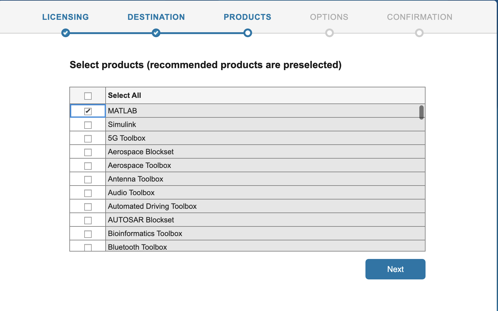
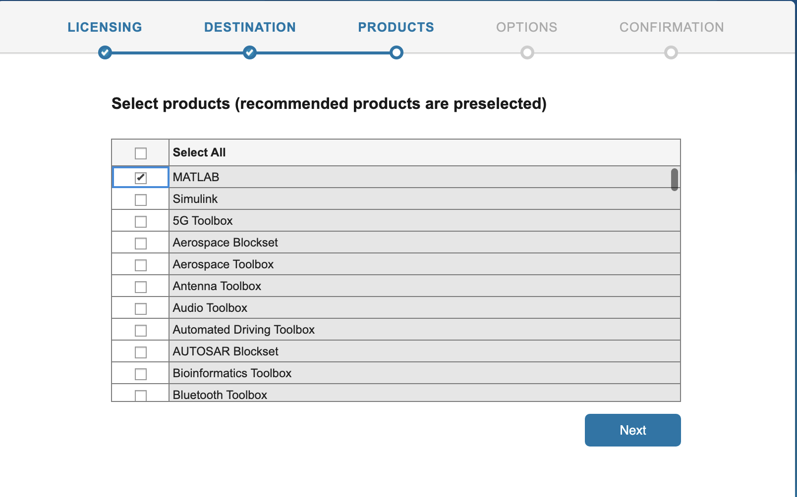
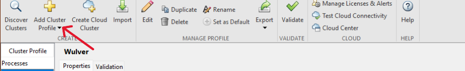

Use MATLAB on NJIT HPC¶
Tip
Since MFA is enabled, the instructions for running MATLAB via HPC resources have been modified. If you already installed MATLAB on the local machine, skip to Setup Slurm profile to run MATLAB on Wulver.
Installation steps of MATLAB on local machine¶
- Go to Mathworks Download and register with your NJIT email address.
- Select the MATLAB version installed on Wulver.
- User needs to select the correct installer based on the OS (Mac or Windows).
- Run the installer.
 

- Make sure to check Parallel Computing Toolbox option.

- Continue by selecting Next and MATLAB will be installed on your computer.
Setup Slurm profile to run MATLAB on Wulver¶
- Open MATLAB → select Create and Manage Clusters.
- A new dialogue box will open and under the Add Cluster Profile, select Slurm.

- This will open a Slurm cluster Profile and select the edit option to modify the parameters
- Modify the following parameters as mentioned in the screenshot
a. Description - Set the name as Wulver
b. JobStorageLocation - No Change
c. NumWorkers - 512
d. NumThreads - No Change
e. ClusterMatlabRoot - Use module av MATLAB command first.
login-1-45 ~ >: module av MATLAB
------------------------------------/apps/easybuild/modules/all/Core---------------------------------------------------------
MATLAB/2024a
Use "module spider" to find all possible modules and extensions.
Use "module keyword key1 key2 ..." to search for all possible modules matching any of the "keys".
module show MATLAB/2024a to check MATLAB installation path.
login-1-45 ~ >: module show MATLAB/2024a
---------------------------------------------------------------------------------------------------------------------------------
/apps/easybuild/modules/all/Core/MATLAB/2024a.lua:
---------------------------------------------------------------------------------------------------------------------------------
help([[
Description
===========
The MATLAB Parallel Server Toolbox.
More information
================
- Homepage: https://www.mathworks.com/help/matlab/matlab-engine-for-python.html
]])
whatis("Description: The MATLAB Parallel Server Toolbox.")
whatis("Homepage: https://www.mathworks.com/help/matlab/matlab-engine-for-python.html")
whatis("URL: https://www.mathworks.com/help/matlab/matlab-engine-for-python.html")
conflict("MATLAB")
prepend_path("CMAKE_PREFIX_PATH","/apps/easybuild/software/MATLAB/2024a")
prepend_path("PATH","/apps/easybuild/software/MATLAB/2024a/bin")
setenv("EBROOTMATLAB","/apps/easybuild/software/MATLAB/2024a")
setenv("EBVERSIONMATLAB","2024a")
setenv("EBDEVELMATLAB","/apps/easybuild/software/MATLAB/R2023a/easybuild/Core-MATLAB-2023a-easybuild-devel")
prepend_path("PATH","/apps/easybuild/software/MATLAB/2024a/toolbox/parallel/bin")
prepend_path("PATH","/apps/easybuild/software/MATLAB/2024a")
prepend_path("LD_LIBRARY_PATH","/apps/easybuild/software/MATLAB/2024a/runtime/glnxa64")
prepend_path("LD_LIBRARY_PATH","/apps/easybuild/software/MATLAB/2024a/bin/glnxa64")
prepend_path("LD_LIBRARY_PATH","/apps/easybuild/software/MATLAB/2024a/sys/os/glnxa64")
setenv("_JAVA_OPTIONS","-Xmx2048m")
EBROOTMATLAB environment variable, which, in the above example, is set to /apps/easybuild/software/MATLAB/2024a.
f. RequireOnlineLicensing - false
g. AdditionalProperties - Select add and add the following as mentioned in the table.
| Name | Value | Type |
|---|---|---|
ClusterHost |
wulver.njit.edu |
String |
AuthenticationMode |
Multifactor | String |
UseUniqueSubfolders |
True | Logical |
UseIdentityFile |
False | Logical |
RemoteJobStorageLocation |
$PATH |
String |
user |
$UCID |
String |
Replace $PATH with the actual path of Wulver where you want to save the output file. Make sure to use /project directory for remote job storage as $HOME has fixed quota of 50GB and cannot be increased. See Wulver Filesystems for details. Replace $UCID with the NJIT UCID.
Submitting a Serial Job¶
This section will demonstrate how to create a cluster object and submit a simple job to the cluster. The job will run the 'hostname' command on the node assigned to the job. The output will indicate clearly that the job ran on the cluster and not on the local computer.
The hostname.m file used in this demonstration can be downloaded here.
>> c=parcluster
Certain arguments need to be passed to SLURM in order for the job to run properly. Here we will set values for partition, and time. In the Matlab window enter:
>> c.AdditionalProperties.AdditionalSubmitArgs=['--partition=general --qos=standard --account=$PI_UCID --time=2-00:00:00']
$PI_UCID with the UCID of PI. Check the SLURM Documentation for other SLURM parameters.
To make this persistent between Matlab sessions these arguments need to be saved to the profile. In the Matlab window enter:
>> c.saveProfile
We will now submit the hostname.m function to the cluster. In the Matlab window enter the following:
>> j=c.batch(@hostname, 1, {}, 'AutoAddClientPath', false);
-
@: Submitting a function. -
1: The number of output arguments from the evaluated function. -
{}: Cell array of input arguments to the function. In this case empty. -
'AutoAddClientPath', false: The client path is not available on the cluster.
When the job is submitted, you will be prompted for your password.
To wait for the job to finish, enter the following in the Matlab window:
>>j.wait
>>fetchOutputs(j)
Submitting a Parallel Function¶
The Job Monitor is a convenient way to monitor jobs submitted to the cluster. In the Matlab window select Parallel and then Monitor Jobs.
For more information see the Mathworks page: Job Monitor.
Here we will submit a simple function using a "parfor" loop. The code for this example is as follows:
function t = parallel_example
t0 = tic;
parfor idx = 1:16
A(idx) = idx;
pause (2)
end
t=toc(t0);
>> c.AdditionalProperties.AdditionalSubmitArgs=['--partition=general --qos=standard --account=$PI_UCID --ntasks=8 --time=2-00:00:00']
>> c.saveProfile
>> j=c.batch(@parallel_example, 1, {}, 'AutoAddClientPath', false, 'Pool', 7)
The job takes a few minutes to run and the state of the job changes to "finished."
Once again to get the results enter:
>> fetchOutputs(j)
Submitting a Script Requiring a GPU¶
In this section we will submit a matlab script using a GPU. The results will be written to the job diary. The code for this example is as follows:
% MATLAB script that defines a random matrix and does FFT
%
% The first FFT is without a GPU
% The second is with the GPU
%
% MATLAB knows to use the GPU the second time because it
% is passed a type gpuArray as an argument to FFT
% We do the FFT a bunch of times to make using the GPU worth it,
% or else it spends more time offloading to the GPU
% than performning the calculation
%
% This example is meant to provide a general understanding
% of MATLAB GPU usage
% Meaningful performance measurements depend on many factors
% beyond the scope of this example
% Downloaded from https://projects.ncsu.edu/hpc/Software/examples/matlab/gpu/gpu_m
% Define a matrix
A1 = rand(3000,3000);
% Just use the compute node, no GPU
tic;
% Do 1000 FFT's
for i = 1:1000
B2 = fft(A1);
end
time1 = toc;
fprintf('%s\n',"Time to run FFT on the node:")
disp(time1);
% Use GPU
tic;
A2 = gpuArray(A1);
% Do 1000 FFT's
for i = 1:1000
% MALAB knows to use GPU FFT because A2 is defined by gpuArray
B2 = fft(A2);
end
time2 = toc;
fprintf('%s\n',"Time to run FFT on the GPU:")
disp(time2);
% Will be greater than 1 if GPU is faster
speedup = time1/time2
gpu to request a gpu. In the Matlab window enter:
>> c.AdditionalProperties.AdditionalSubmitArgs=['--partition=gpu --qos=standard --account=PI_UCID --gres=gpu:1 --mem-per-cpu=4G --time=2-00:00:00']
Submit the job as before. Since a script is submitted as opposed to a function, only the name of the script is included in the batch command. Do not include the @ symbol. In a script there are no inputs or ouptuts.
>> j=c.batch('gpu', 'AutoAddClientPath', false)
To get the result:
>> j.diary
Load and Plot Results from A Job¶
In this section we will run a job on the cluster and then load and plot the results in the local Matlab workspace. The code for this example is as follows:
n=100;
disp("n = " + n);
A = gallery('poisson',n-2);
b = convn(([1,zeros(1,n-2),1]'|[1,zeros(1,n-1)]), 0.5*ones(3,3),'valid')';
x = reshape(A\b(:),n-2,n-2)';%
>> j=c.batch('plot_demo', 'AutoAddClientPath', false);
To load 'x' into the local Matlab workspace:
>> load(j,'x')
Finally, plot the results:
>> plot(x)